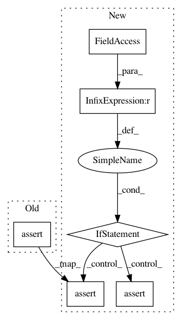

bef19cd1615e4b1eaa73fbf17d1cac889c1ca527,se3cnn/non_linearities/multiplication.py,Multiplication,__init__,#Multiplication#,8
Before Change
C = SO3.clebsch_gordan(l, l_1, l_2).type(torch.get_default_dtype()) * (2 * l + 1) ** 0.5
if l_1 == 0 or l_2 == 0:
m = C.view(2 * l + 1, 2 * l + 1)
assert (m - torch.eye(2 * l + 1, dtype=C.dtype)).abs().max() < 1e-10, m.numpy().round(3)
else:
self.register_buffer("cg_{}_{}_{}".format(l, l_1, l_2), C)
self.Rs_out = Rs_out
After Change
C = SO3.clebsch_gordan(l, l_1, l_2).type(torch.get_default_dtype()) * (2 * l + 1) ** 0.5
if l_1 == 0 or l_2 == 0:
m = C.view(2 * l + 1, 2 * l + 1)
if C.dtype == torch.float:
assert (m - torch.eye(2 * l + 1, dtype=C.dtype)).abs().max() < 1e-7, m.numpy().round(3)
else:
assert (m - torch.eye(2 * l + 1, dtype=C.dtype)).abs().max() < 1e-10, m.numpy().round(3)
else:
self.register_buffer("cg_{}_{}_{}".format(l, l_1, l_2), C)
self.Rs_out = Rs_out
In pattern: SUPERPATTERN
Frequency: 7
Non-data size: 6
Instances
Project Name: mariogeiger/se3cnn
Commit Name: bef19cd1615e4b1eaa73fbf17d1cac889c1ca527
Time: 2019-09-04
Author: benmiller1315@gmail.com
File Name: se3cnn/non_linearities/multiplication.py
Class Name: Multiplication
Method Name: __init__
Project Name: scikit-optimize/scikit-optimize
Commit Name: 31c01232a0e376eabc32ebea75a160a3bf3971e7
Time: 2017-06-11
Author: betatim@gmail.com
File Name: skopt/tests/test_common.py
Class Name:
Method Name: test_init_points_and_models
Project Name: pytorch/contrib
Commit Name: 3a3a5488938ef6aa4caa5a13a14d5cc31ffa6023
Time: 2018-08-31
Author: tongzhou.wang.1994@gmail.com
File Name: test/common.py
Class Name: TestCase
Method Name: assertEqual
Project Name: deeptools/HiCExplorer
Commit Name: 7cf9aa420c1fb74ee4379afa79343725007b30b0
Time: 2019-08-22
Author: wolffj@informatik.uni-freiburg.de
File Name: hicexplorer/test/general/test_chicViewpointBackgroundModel.py
Class Name:
Method Name: test_compute_background
Project Name: scikit-optimize/scikit-optimize
Commit Name: 31c01232a0e376eabc32ebea75a160a3bf3971e7
Time: 2017-06-11
Author: betatim@gmail.com
File Name: skopt/tests/test_common.py
Class Name:
Method Name: test_init_vals_and_models
Project Name: scikit-learn/scikit-learn
Commit Name: 0ea324406174f046877c98bfe758c16122ad8ba7
Time: 2020-07-04
Author: ashutoshhathidara98@gmail.com
File Name: sklearn/metrics/tests/test_common.py
Class Name:
Method Name: test_thresholded_multilabel_multioutput_permutations_invariance
Project Name: VOLTTRON/volttron
Commit Name: ba892958df87fc542cc27db769d485487f1292ef
Time: 2019-06-10
Author: Ic0d3@99353!
File Name: services/core/Darksky/tests/test_darksky.py
Class Name:
Method Name: test_success_forecast